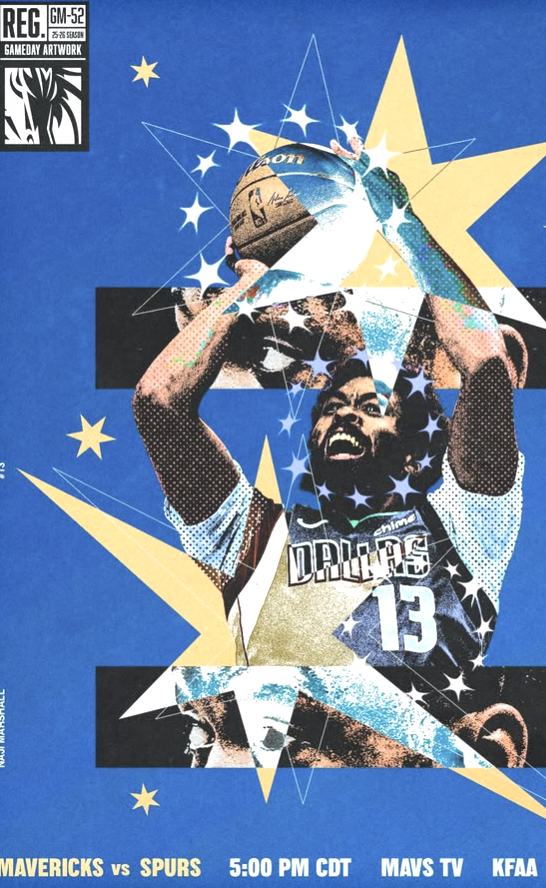
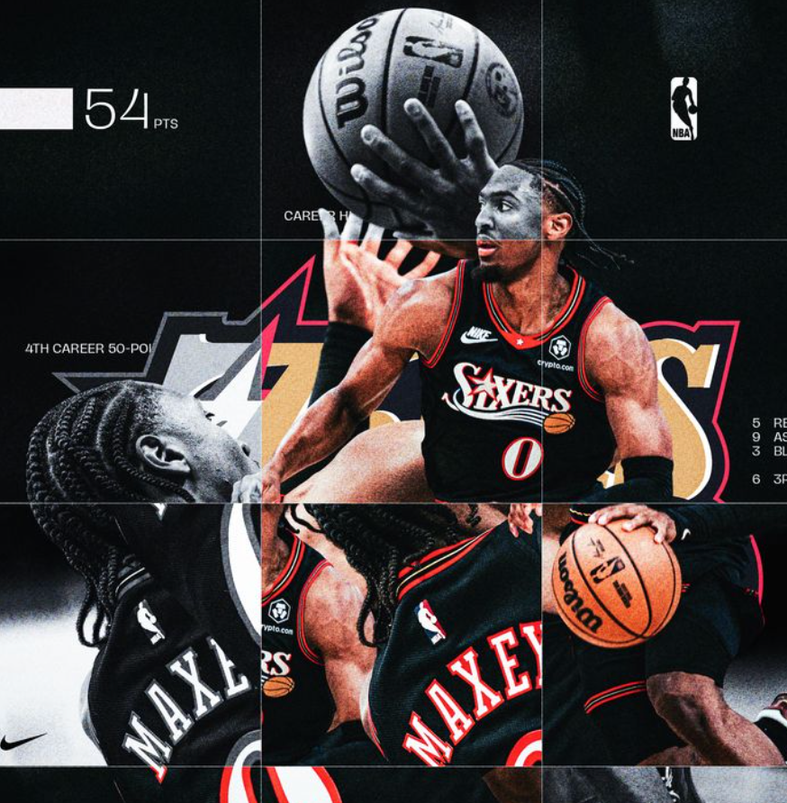

✳
INVISIBLE
IMPACT.
How do spacing, off-ball movement, defensive positioning, and decisions change the opportunities available to teammates?
PLAYER INFLUENCE ↗I'M INTERESTED IN EVERYTHING THAT DOESN'T MAKE THE HIGHLIGHT REEL.
Basketball is 48 minutes of beautiful chaotic synchrony. I want to understand how one player changes the possibilities for everyone else.

A possession is not five individual performances. It's a chain of decisions, reactions, and opportunities.
When a star draws two defenders, the box score might credit the eventual scorer. But what about the space created? The rotation forced? The defender who never touched the ball but changed the shot?
I'm interested in measuring those connections — and how they translate into wins, better roster construction, and smarter decisions.
READ MY FULL BASKETBALL PHILOSOPHYImagine the possession from a different angle. Select a moment to see how attention shifts across the floor.
Three connected questions drive the way I want to approach basketball analytics.
How do spacing, off-ball movement, defensive positioning, and decisions change the opportunities available to teammates?
PLAYER INFLUENCE ↗How does a player's value change depending on the roster, system, role, and people sharing the floor?
CONTEXTUAL MODELING ↗What does an acquisition actually add to winning when salaries, roster constraints, and opportunity cost enter the picture?
ROSTER ECONOMICS ↗
Steph Curry gets the steal. The stat sheet records it. But what if Draymond Green's positioning influenced the decision that made the steal possible?
Not every contribution ends with a touch, a shot, or a traditional stat. That doesn't make it any less real.
THE DEFENSIVE SIDE OF VALUE ↗Building a technical foundation in data science and AI, with basketball as the long-term testing ground.
An independent benchmark studying sycophancy in multi-turn AI conversations.
DIALOGUES
BENCHMARK SCOPE
Player movement, location, and off-ball interactions over time.
Measuring the ways athletes change their teammates' opportunities.
Projecting player contributions in a specific team environment.
I'm working toward a B.S. in Data Science (Advanced Data Science) through Oregon State University. Before this program, I co-founded Corner League, a sports media and operations platform built for underserved sports. I began as CEO and now lead strategic partnerships.
Building the company taught me that niche sports are full of untracked performance data, and that turning it into something meaningful takes more than good storytelling. It takes real modeling.
Long term, I want to do AI and machine learning research applied to professional sports, especially modeling how athletes and objects move through space and time.
Learning in public. Building the foundation before claiming the results.
Probability, statistical reasoning, and mathematics behind analytical models.
Cleaning, organizing, manipulating, and analyzing data with R and the tidyverse.
Theoretical foundations and real-world applications.
Choosing suitable methods, understanding why they work, and interpreting results.
Seeking experience through OSU's URSA Engage program.
Always open to conversations about basketball analytics, AI research, and data.
FIND ME ON GITHUB